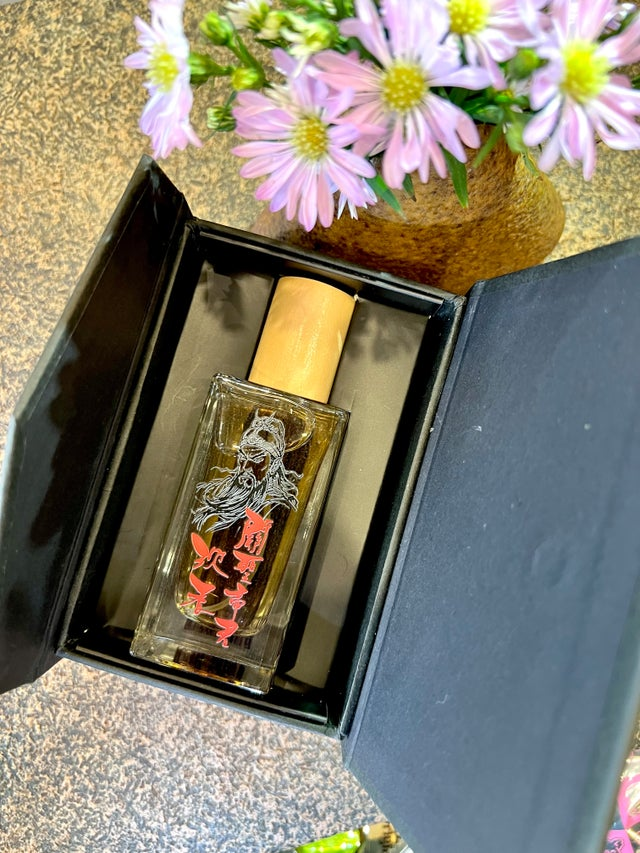

ODOR 蝶漾香韻
關聖帝君沉香50ml
關聖帝君沉香香水
關聖帝君，亦稱關公、關帝爺，是忠義仁勇的象徵，深受世人敬仰。本款關聖帝君沉香香水，以沉穩尊貴的沉香為基調，展現出關帝的威嚴與正氣，並融合細膩雅致的香氣，帶來心靈的平靜與庇佑。
香氣特色
前調：淡雅木質香，彷彿步入古廟，感受莊嚴肅穆的氛圍。
中調：沉香與檀香交織，散發溫潤醇厚的木質氣息，象徵關聖帝君的沉穩與智慧。
後調：淡淡的草本與香草氣息，柔和悠長，猶如關帝庇護眾生的仁德與慈悲。
適合於日常噴灑，亦可於敬神儀式、冥想修行或需要穩定心神時使用，帶來正能量與祥和之氣。安定靈魂 養護元神 護身避煞 常保平安
淨身淨地 穩定磁場 加強除穢 靈體防護。
